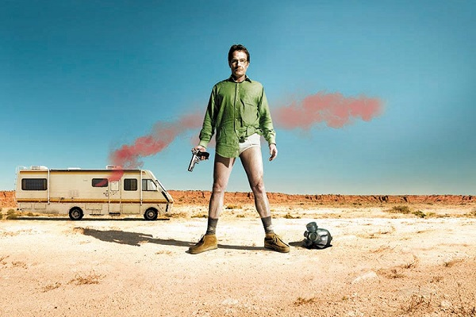
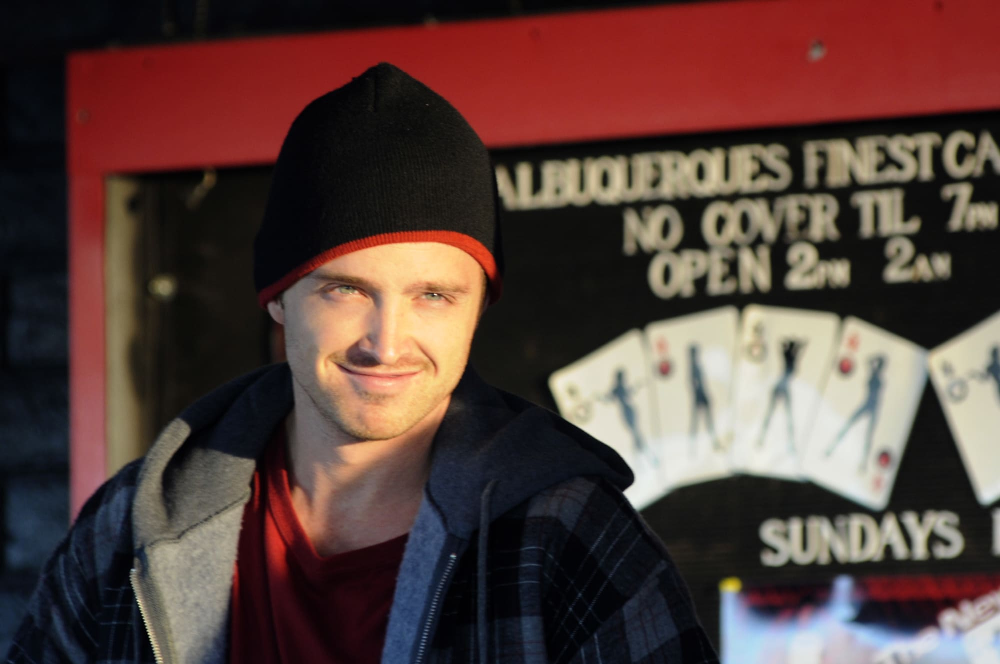

Breaking Bad é uma série de televisão americana criada e produzida por Vince Gilligan. Ela retrata a vida do químico Walter White, um homem brilhante frustrado em dar aulas para adolescentes do ensino médio enquanto lida com um filho sofrendo de paralisia cerebral, uma esposa grávida e dívidas intermináveis. White, então, é diagnosticado com um câncer no pulmão - o que o leva a sofrer um colapso emocional e abraçar uma vida de crimes para pagar suas dívidas hospitalares e dar uma boa vida aos seus filhos. Walter resolve produzir metanfetamina de alta pureza com seu ex-aluno, Jesse Pinkman.

Breaking Bad se passa em Albuquerque, Novo México, e gira em torno das escolhas de seu protagonista, as quais o levam a uma intensa, dolorosa e inevitável transformação. Amplamente considerada como uma das melhores séries da história, ao seu final, foi um dos programas da televisão a cabo mais assistidos nos Estados Unidos, recebendo inúmeros prémios, incluindo dezesseis Primetime Emmy Awards, oito Satellite Awards, dois Globos de Ouro e um Prémio Escolha Popular. Em 2014, entrou para o Livro dos Recordes como o seriado mais bem avaliado de todos os tempos pela crítica.


A série foi originalmente exibida pelo canal de televisão por assinatura AMC, onde estreou no dia 20 de janeiro de 2008 e, depois de cinco temporadas de sucesso, teve seu último episódio transmitido no dia 29 de setembro de 2013. Em Portugal, foi exibida pelos canais SIC Radical, TVséries e MOV. No Brasil, o seriado é exibido pelo canal pago AXN e pelo serviço de streaming Netflix e, na TV aberta, foi exibida pela Rede Recorde pela Band.